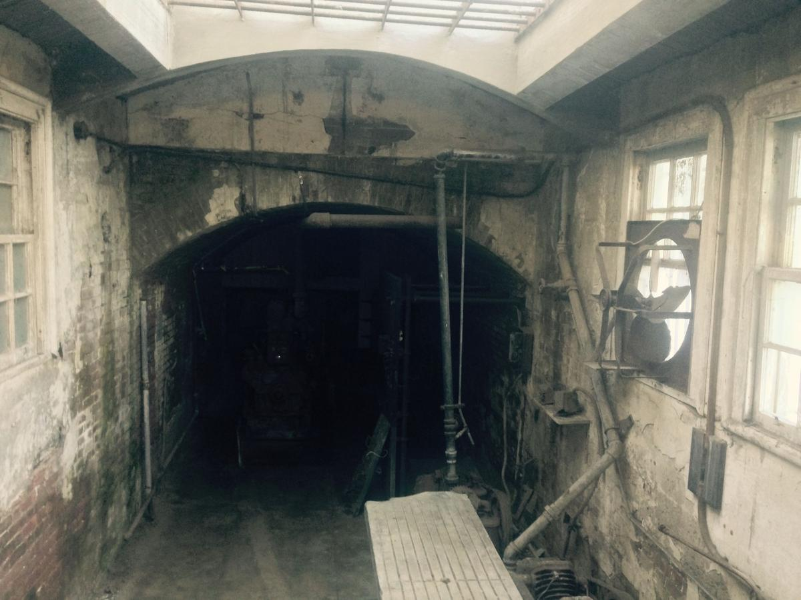

죄 사함의 확신
골 1 : 14“그 아들 안에서 우리가 구속 곧,
죄 사함을 얻었도다”
하나님은 당신의 인생을 위하여 놀라운 계획을 가지고 계십니다.
“내가 온 것은 양으로 생명을 얻게하고 더 풍성히 얻게 하려는 것이라.”
그러나 많은 사람들이 풍성한 삶을 누리지 못하고 있습니다.
그 이유는 무엇입니까?
바로 생명(구원)의 귀중함을 알지 못하기 때문입니다.
Have you been saved by faith because of your kindness? This is not from you.
God's gift didn't come from an act. This won't let anyone boast.
“너희가 그 은혜를 인하여 믿음으로 말미암아 구원을 얻었나니 이것이 너희에게서 난 것이 아니요.
하나님의 선물이라 행위에서 난 것이 아니니 이는 누구든지 자랑치 못하게 함이니라.”
그러나 우리에겐 죄가 있습니다.
롬 5 : 12
“한 사람으로 말미암아 죄가 세상에 들어오고 죄로 말미암아 사망이 왔나니,
이와 같이 모든 사람이 죄를 지었으므로 사망이 모든 사람에게 이르렀느니라.”
시 51 : 5
“내가 죄악 중에 출생하였음이여, 모친이 죄 중에 나를 잉태하였나이다.”
롬 1 : 28
“저희가 마음에 하나님 두기를 싫어하매 하나님께서 저희를 그 상실(타락)한 마음대로
내어버려 두사, 합당치 못한(해서는 안 되는)일을 하게 하셨으니”
롬 1: 29 ~ 32
“곧 모든 불의, 추악, 탐욕, 악의가 가득한 자요,
시기, 살인, 분쟁, 사기, 악독이 가득한 자요. 수군수군하는 자요.
비방하는 자요, 하나님의 미워하시는 자요, 능욕하는 자요,
교만한 자요, 자랑하는 자요, 악을 도모하는 자요,
부모를 거역하는 자요,우매한 자요, 배약하는 자요, 무정한 자요, 무자비한 자라.
저희가 이 같은 일을 행하는 자는 사형에 해당하다고
하나님의 정하심을 알고도 . . .”

System 21 : 8 / Just 9 : 48 to 49But the fear, the distrust, the wicked, The murderers, the hymns, the drinkers, the idolatry, all the liars, This is the second death.
“죄의 삯은 사망이요. 하나님의 은사는
그리스도 주 예수 우리 주안에 있는 영생이니라.”
“그러나 두려워하는 자들과 믿지 아니하는 자들과 흉악한 자들과 살인자들과
행음자들과 술객들과 우상 숭배자들과 모든 거짓말하는 자들은 불과 유황으로
타는 못에 참예하리니, 이것이 둘째 사망이라.”
“내가 받은 것을 먼저 너희에게 전하였노니, 이는 성경대로 그리스도께서 우리 죄를 위하여 죽으시고,
장사 지낸 바 되었다가 성경대로 사흘만에 다시 살아나사”
“친히 나무에 달려 그 몸으로 우리 죄를 담당하셨으니,이는 우리로 죄에 대하여 죽고,
의에 대하여 살게 하려 하심이라. 저가 채찍에 맞음으로 너희는 나음을 얻었나니.”
“그가 찔림은 우리의 허물을 인함이요. 그가 상함은 우리의 죄악을 인함이라.
그가 징계를 받으므로 우리가 평화를 누리고 그가 채찍에 맞으므로 우리가 나음을 입었도다.”
구원받기 위해서 해야 할 일은
“찬송하리로다 우리 주 예수 그리스도의 아버지 하나님이 그 많으신 긍휼대로 예수 그리스도의
죽은 자 가운데서 부활하심으로 말미암아 우리를 거듭나게 하사 산 소망이 있게 하시며”
예수님이 십자가에서 내 죄를 위하여 죽으시고 부활하신
사실을 마음에 받아들이고 믿을 때,
첫째, 내 마음 속에 죄 사함의 확신이 이루어집니다.
둘째, 새 생명과 영생이 이루어 집니다.
사 55 : 7
“악인은 그 길을, 불의한 자는 그 생각을 버리고 여호와께로 돌아오라
그리하면 그가 긍휼히 여기시리라. 우리 하나님께로 나아오라 그가 널리 용서하시리라.”
행 3 : 19
"그러므로 너희가 회개하고 돌이켜 너희 죄 없이 함을 받으라"
요 1 : 12
“영접하는 자 곧 그 이름을 믿는 자들에게는
하나님의 자녀가 되는 권세를 주셨으니”
계 3 :20
“볼지어다 내가 문 밖에 서서 두드리노니 누구든지 내 음성을 듣고 문을 열면
내가 그에게로 들어가 그로 더불어 먹고 그는 나로 더불어 먹으리라.”
영접을 위한 기도 예수님 나는 죄인입니다.
내 죄를 용서해 주세요.
지금까지는 내 뜻대로 살았지만 이제는 예수님 뜻대로 살겠습니다.
예수님이 나를 구원하시기 위해 십자가에서 죽으셨다가 살아나신 것을 내가 믿습니다.
내 마음에 들어오셔서 내 삶을 인도해 주세요.
예수님의 이름으로 기도합니다.
구원 받은 확신을 말씀이 증거하고 있습니다.
“그 아들 안에서 우리가 구속 곧,
죄 사함을 얻었도다”
“내가 진실로 진실로 너희에게
이르노니 내 말을 듣고 또 나 보내신
이를 믿는 자는 영생을 얻었고
심판에 이르지 아니하나니
사망에서 생명으로 옮겼느니라”
“성령이 친히 우리 영으로
더불어 우리가 하나님의
자녀인 것을 증거 하시나니”
하나님의 자녀로 성장해야 합니다.
벧후 3 : 18
“오직 우리 주 곧 구주 예수그리스도의 은혜와 저를 아는 지식에서 자라가라.”
요 10 : 27
“내 양은 내 음성을 들으며 나는 저희를 알며 저희는 나를 따르느니라”
벧전 2 : 2
“ 갓난 아이들같이 순전하고 신령한 젖을 사모하라.
이는 이로 말미암아 너희로 구원의 이르도록 자라게 하려 함이라.”